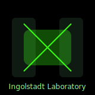

Unmaking the Dream
With trembling resolve you take the construct apart. The night is quiet again. Yet the question remains: do you share your knowledge or bury it?
↩️ Back to Home
Images are original SVGs created for this project and released under
CC0 1.0 Public Domain Dedication.
Attribution: “SVG by the author (student) / ChatGPT-assisted”.